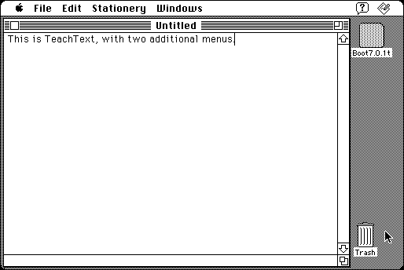

Download
TextEditorPatches_1.7.zip (41K) Text Editor Patches 1.7 repackaged into a zipped hfs disk image and checksum file. The disk image can be mounted with Mini vMac.
TextEditorPatches_1.7.sit.bin (41K) Text Editor Patches 1.7 in the original format.
copyright: James W. Walker
mod date: Feb 11, 1996
license: Freeware
from url :
James Walker’s Mac Stuff
Allows you to add features to text editing in other applications. The patches are applied to specific applications instead of the entire system, which may reduce incompatibilities. Not all the available patches will work on a Mac Plus (some require color quickdraw and will crash). Requires System 7.

If you find these downloads useful, please consider helping the Gryphel Project, which hosts them.
Here are the md5 checksums for the downloads, signed with Gryphel Key 5:
--------- GRY SIGNED TEXT --------- 70a343af5db4f16ab00bf61dcc2e72d1 TextEditorPatches_1.7.zip f7e8c64ac0fbaf78fa417162681630b5 TextEditorPatches_1.7.sit.bin ------- BEGIN GRY SIGNATURE ------- Gry/4Xa8CFcUzxdN/EKdAI3GogXmKnsx4pafjR1codrP3FF3zzPLXRm9xkul1xCw pjObU4AbcsssezlI7L4SUfuW0lNXdjidpzRSYeG1aHrLKv5u3DPryjR8rTqzc7KL I4+TJiQQJoW7jiC2AuCWhiM39nBb9dQIrxfjEACddXRKWRQT719wLs+jbEVrLG7E -------- END GRY SIGNATURE --------